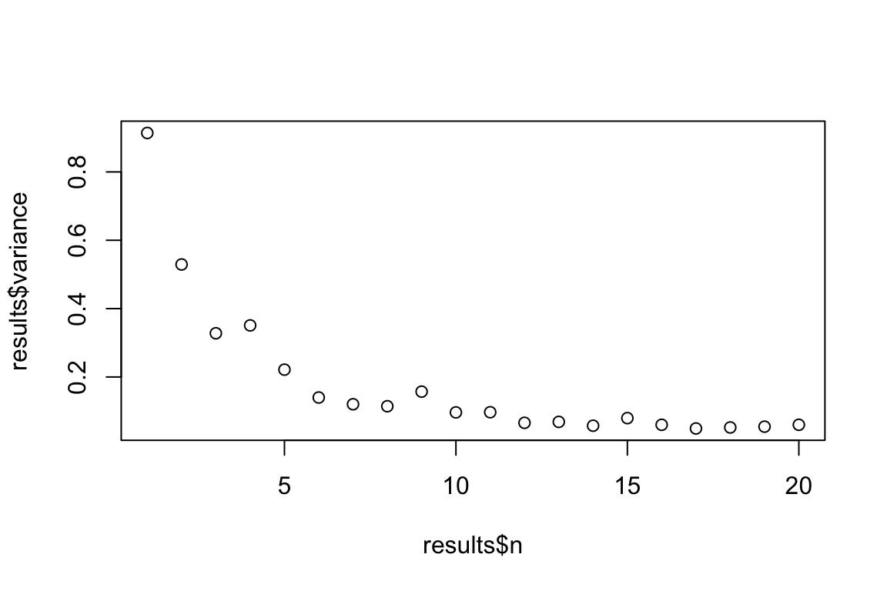

This page was last updated on February 01, 2024.
This page provides some basic guidance on repeating a blocked sequence of instructions using for loops.
for loop basicsThe for loop is probably the simplest way to carry out a
repeated task without having to type (or copy/paste/edit) the same code
over and over. In essence, a for loop is a way to repeat a blocked
sequence of instructions, allowing you to automate parts of your code
that are in need of repetition.
An easy way to understand what is going on in the for
loop is by reading it as follows: For each number from 1 to the last
number of your index (5 in the example below), you execute the code
chunk {...} that immediately follows (in the example below
we just print the index). Once the for loop has executed the code chunk
for every number (i.e., iteration) in the sequence you defined at the
outset, the loop stops.
for(i in 1:5){
print(i)
}## [1] 1
## [1] 2
## [1] 3
## [1] 4
## [1] 5There are a few basic things to note about for loops. The first is
that the index does not have to be called i. We can call it
anything we like. We usually use i and j
because these line up with the standard row and column notation from
matrix algebra, but we could just as easily use the word
ROW (or any other word we might want).
for(ROW in 1:5){
print(ROW)
}## [1] 1
## [1] 2
## [1] 3
## [1] 4
## [1] 5Another thing to note is that a for loop does not need
to contain the index. It will loop a sequence of code whether it
contains the index or not. The index is just a useful way to not only
repeat a process, but make incremental changes in the behaviour of a
loop.
for(i in 1:5){
print("hello world")
}## [1] "hello world"
## [1] "hello world"
## [1] "hello world"
## [1] "hello world"
## [1] "hello world"for(i in 1:5){
print(paste("hello world, I'm replicate", i))
}## [1] "hello world, I'm replicate 1"
## [1] "hello world, I'm replicate 2"
## [1] "hello world, I'm replicate 3"
## [1] "hello world, I'm replicate 4"
## [1] "hello world, I'm replicate 5"For loops also don’t have to start at 1, and they don’t have to be perfect sequences of numbers. They can run backwards, start and end at any number you chose, have gaps, or even be characters. For example, any of these for loops will run without issue.
for(i in 3:7){print(i)}## [1] 3
## [1] 4
## [1] 5
## [1] 6
## [1] 7for(i in 5:1){print(i)}## [1] 5
## [1] 4
## [1] 3
## [1] 2
## [1] 1for(i in c(1,3,5,7)){print(i)}## [1] 1
## [1] 3
## [1] 5
## [1] 7for(i in c("A", "B", "C")){print(i)}## [1] "A"
## [1] "B"
## [1] "C"for loopGenerally, when you automate a repetitive task you will also want to save the results after the loop has completed running. For example, you might want to generate 50 random samples from a Gaussian distribution, each with \(n\) = 10, and calculate the mean each time. The following loop will accomplish this
for(i in 1:50){
SAMPLE <- rnorm(n = 10)
mean(SAMPLE)
}The problem with this setup is that after the loop has finished
running, there are no results to inspect. This is because everything
that happens within the blocked code of a for loop happens
within an internal environment, and we need to take extra steps to pull
the results out of the loop. Otherwise, the results of an iteration will
disappear after it has completed. In this example we are expecting a
single number to be returned from the loop (the estimated mean). If we
have a single number to save, the best way is to place it in the
appropriate ‘slot’ in a vector (i.e., the first mean should go in slot
1, the second mean in slot 2, and so on…). To save the results in a
vector, we first need to create a vector before running the loop. Inside
the loop all we need to do then is save the result from each iteration
i into the i’th element of the vector using
standard sub-setting notation [].
MEANS <- vector()
for(i in 1:50){
SAMPLE <- rnorm(n = 10)
MEANS[i] <- mean(SAMPLE)
}
head(MEANS)## [1] -0.1775737 -0.0120650 0.4525612 0.1553435 -0.2097950 0.5872926Generally speaking it’s best practice to define the length of the vector before running the for loop. This is because ‘growing’ the length of a variable in a for loop is computationally inefficient and can slow down your code. For simple tasks the difference is trivial, but for complex tasks the slow downs can be very important. Best practice for the previous loop would look like this:
MEANS <- vector("numeric", length = 50)
for(i in 1:50){
SAMPLE <- rnorm(n = 10)
MEANS[i] <- mean(SAMPLE)
}Sometimes we might want more than a single piece of information from a loop. For example, let’s say we wanted to save not only the mean of each sample, but the standard deviation. One simple way to do this is to have a vector for each results.
MEANS <- vector("numeric", length = 50)
SDs <- vector("numeric", length = 50)
for(i in 1:50){
SAMPLE <- rnorm(n = 10)
MEANS[i] <- mean(SAMPLE)
SDs[i] <- sd(SAMPLE)
}
head(MEANS)## [1] -0.186639084 0.008442812 -0.533903073 0.495030095 0.497541277
## [6] 0.189455788head(SDs)## [1] 0.9269096 1.2981547 1.1123793 0.6905977 0.5738516 1.1041033But this can quickly get unwieldy if we have a lot of information we want to save. Another option is to save our outputs in lists. Lists are extremely flexible ways of storing information.
RESULTS <- list()
for(i in 1:50){
SAMPLE <- rnorm(n = 10)
MEAN <- mean(SAMPLE)
SD <- sd(SAMPLE)
VAR <- var(SAMPLE)
RESULTS[[i]] <- c(MEAN, SD, VAR)
}
head(RESULTS)## [[1]]
## [1] -0.005398288 1.319705093 1.741621533
##
## [[2]]
## [1] -0.0358038 1.2360660 1.5278591
##
## [[3]]
## [1] -0.2184938 0.9955905 0.9912004
##
## [[4]]
## [1] 0.07120882 1.33249896 1.77555349
##
## [[5]]
## [1] 0.3029196 0.7935969 0.6297960
##
## [[6]]
## [1] -0.0722519 1.0216039 1.0436746Here each slot in the list contains a vector of length 3 which contains the estimated mean, standard deviation, and variance. Storing results in a list is very convenient because everything gets stored in the same object, but working with the results can be challenging. To make it easier to inspect the results of a for loop stored in a list, a bit of post-processing is required to get the data back into an easy to work with format.
RESULTS_CLEAN <- do.call(rbind, RESULTS)
RESULTS_CLEAN <- data.frame(RESULTS_CLEAN)
names(RESULTS_CLEAN) <- c("mean", "sd", "var")
head(RESULTS_CLEAN)## mean sd var
## 1 -0.005398288 1.3197051 1.7416215
## 2 -0.035803800 1.2360660 1.5278591
## 3 -0.218493836 0.9955905 0.9912004
## 4 0.071208817 1.3324990 1.7755535
## 5 0.302919574 0.7935969 0.6297960
## 6 -0.072251903 1.0216039 1.0436746Sometimes we’re interested in repeating a repeated task. This can be done using nested for loops (i.e., a for loop inside a for loop). With nested for loops the ‘outer’ loop controls the number of repetition of the whole block, while the inner loop executes n-times every time the outer for loop. For example let’s say I want to estimate the means of datasets with sample sizes ranging between 1 and 20, but I’m not just interested in estimating each of these means a single time, but in the variance of 100 means for each sample size. We could do this using nested for loops as follows.
#Number of replicates
nReps <- 100
#list to store high level results
Var_Of_Means <- list()
#Outer loop over the different sample sizes of interest
for(i in 1:20){
#Vector to store internal results (note: will re-write each iteration of outer loop)
MEANS <- vector("numeric", length = nReps)
#Inner loop over the desired number of replicates
for(j in 1:nReps){
SAMPLE <- rnorm(n = i)
MEANS[j] <- mean(SAMPLE)
} #Closes inner loop
#Store the results of each iteration of the inner loop
Var_Of_Means[[i]] <- data.frame(n = i,
variance = var(MEANS))
} #Closes outer loop
#Clean up and view the results
results <- do.call(rbind, Var_Of_Means)
#Plot the change in variance of sample means as a function of n
plot(results$variance ~ results$n)